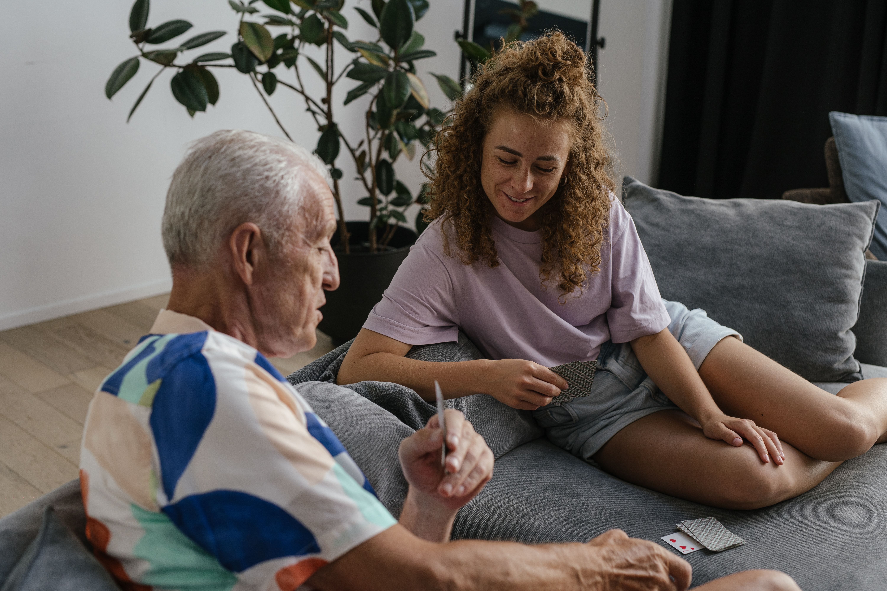

Een levensverhaal
Van jeugd tot nu: een gesprek waarin belangrijke periodes, mensen en momenten uit iemands leven langskomen.
Persoonlijke gesprekken, professioneel opgenomen
Tijdcapsule is een audio-opname van een gesprek met iemand die belangrijk voor je is. Van de voorbereiding tot de opname wordt alles zo geregeld dat jullie je vooral op het gesprek kunnen richten — en er iets overblijft om later nog eens terug te luisteren.

Wat is Tijdcapsule?
Een Tijdcapsule kan een gesprek zijn tussen ouder en kind, twee vrienden, partners, grootouder en kleinkind, of iemand die zijn of haar verhaal wil vastleggen.
Je bepaalt zelf waar het gesprek over gaat. Sommige mensen vertellen hun levensverhaal, anderen praten over hun jeugd, werk of familie. Alles is goed.
Wat voor gesprek?
Van jeugd tot nu: een gesprek waarin belangrijke periodes, mensen en momenten uit iemands leven langskomen.
Geen chronologisch interview, maar een losser gesprek met persoonlijke, verrassende en soms grappige vragen.
Je kunt ook inzoomen op één periode of thema: jeugd, familie, liefde, werk, reizen, een bijzondere plek of iets wat jullie samen hebben meegemaakt.
Hoe werkt het?
Vooraf wordt kort besproken wat voor gesprek je voor ogen hebt. Wie zelf interviewt, krijgt hulp bij onderwerpen, open vragen en een eenvoudige opbouw.
De apparatuur wordt op locatie rustig klaargezet en getest, zodat de opname technisch goed staat.
Willen jullie liever helemaal alleen zijn? Geen probleem. Zodra alles klaarstaat en de opname loopt, kan het gesprek volledig privé plaatsvinden.
Na afloop wordt de audio netjes afgewerkt en ontvang je de opname digitaal én op USB.

Vragen ter inspiratie
Voorbeeldfragmenten
Dit zijn demo-fragmenten om te laten zien hoe de luisterervaring op de site kan werken. De uiteindelijke voorbeelden kun je later eenvoudig vervangen door echte opnames.
Een kort fragment rond één concrete herinnering.
Een gesprek waarin kleine details een herinnering weer concreet maken.
Een voorbeeld van een luchtiger verhaal dat bij een familie hoort.
Demo: de stemmen hierboven zijn alleen tijdelijke testaudio. Vervang later de bestanden in
/audio/ door echte fragmenten.
Pakketten
01 · Jullie voeren het gesprek
Eenvoudig, persoonlijk en professioneel opgenomen.
€199
Op locatie wordt alles klaargezet en de opname gecontroleerd. Daarna voeren jullie zelf het gesprek.
Als jullie liever alleen zijn, hoeft er tijdens het gesprek niemand bij te blijven.
Je krijgt vooraf een korte lijst met tips en voorbeeldvragen.
02 · Zelf interviewen + voorbereiding
Meer tijd en een gesprek dat je vooraf samen goed voorbereidt.
€349
Vooraf bespreken we wat je graag wilt weten, welke verhalen je wilt ophalen en welke invalshoek bij jullie past.
Daarna krijgen jullie een persoonlijke vragenlijst met tips voor doorvragen en een natuurlijke opbouw.
Ook bij dit pakket kan het gesprek volledig privé plaatsvinden.
03 · Meerdere stemmen over één persoon
Een audioportret opgebouwd uit herinneringen van anderen.
vanaf €649
Ik interview familieleden, vrienden en andere mensen die de hoofdpersoon goed kennen.
Uit hun herinneringen, anekdotes en beschrijvingen maak ik één persoonlijk audioportret.
Zo ontstaat een beeld van iemand door de ogen van de mensen om hen heen.

Over mij
Ik ben journalist en podcastmaker uit Amsterdam. Voor mijn werk maak ik verhalende podcastseries en interview ik mensen over hun leven, herinneringen en ervaringen. Daarbij gaat veel aandacht naar een ontspannen gesprek, goed doorvragen en het vinden van verhalen die iemand echt typeren.
Die ervaring neem ik mee naar Tijdcapsule: van een los familiegesprek tot een uitgebreider audioportret met meerdere stemmen.
Bekijk mijn werkContact
Stuur me gerust een bericht. Dan kijken we samen welke vorm het beste past.